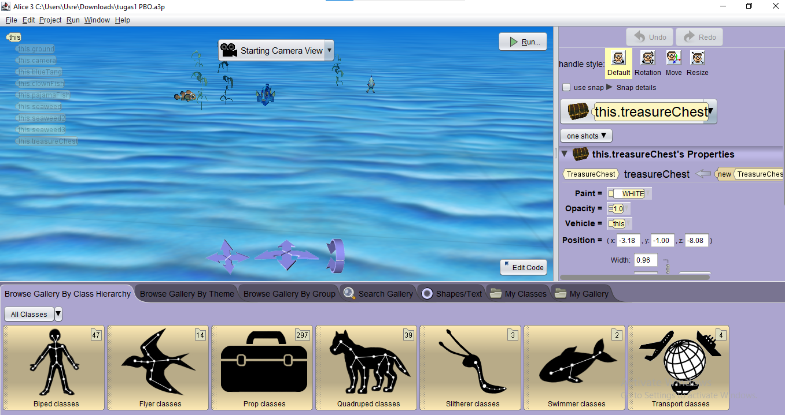
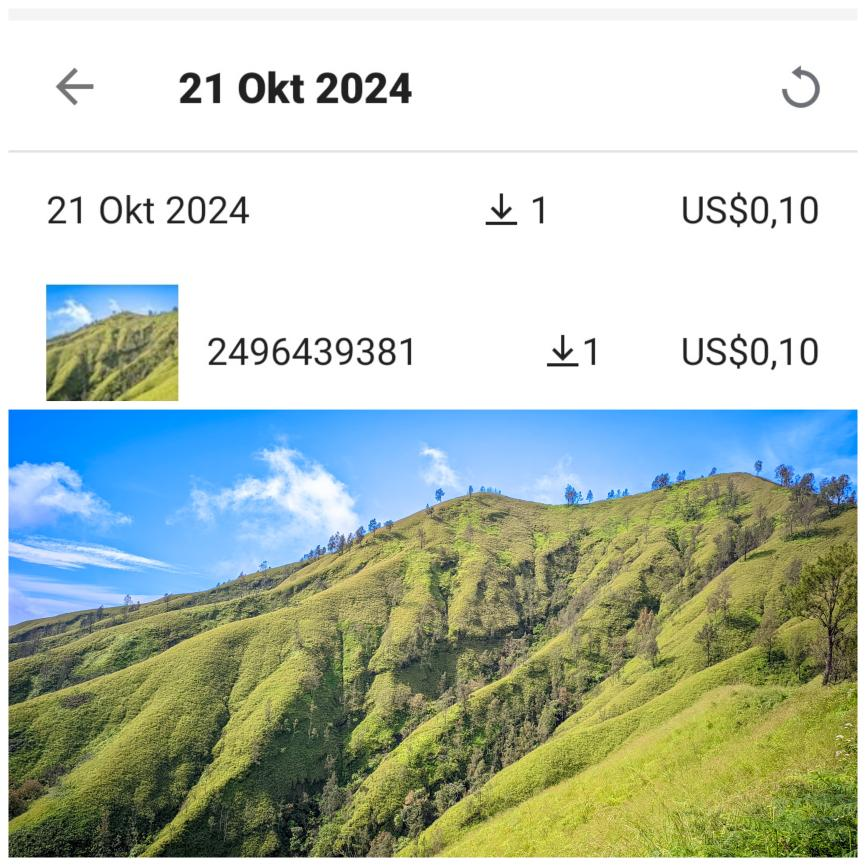

Portofolio

Alice 3D Animation
Deskripsi proyek Alice 3D Animation: Perangkat lunak ini mengajarkan pemrograman dengan cara yang menyenangkan melalui animasi 3D, cocok untuk pemula dan mendukung kreativitas.

Photo
Deskripsi proyek Photo: Ini adalah proyek yang melibatkan pengambilan dan pengeditan foto untuk meningkatkan keterampilan fotografi Yang sudah saya jual di paltform online.

SQL Basic
Deskripsi proyek SQL Basic: Ini adalah proyek yang melibatkan penggunaan SQL untuk manajemen basis data, termasuk query dan pengolahan data.

User Interface
Deskripsi proyek User Interface: Proyek ini berfokus pada desain antarmuka pengguna yang menarik dan responsif menggunakan HTML, CSS, dan JavaScript.